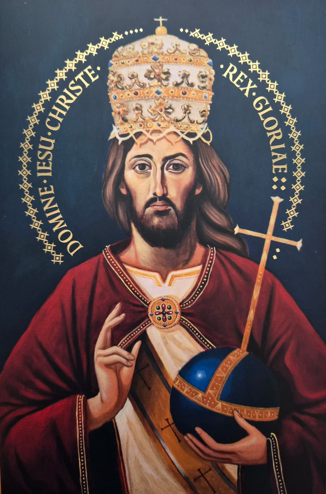
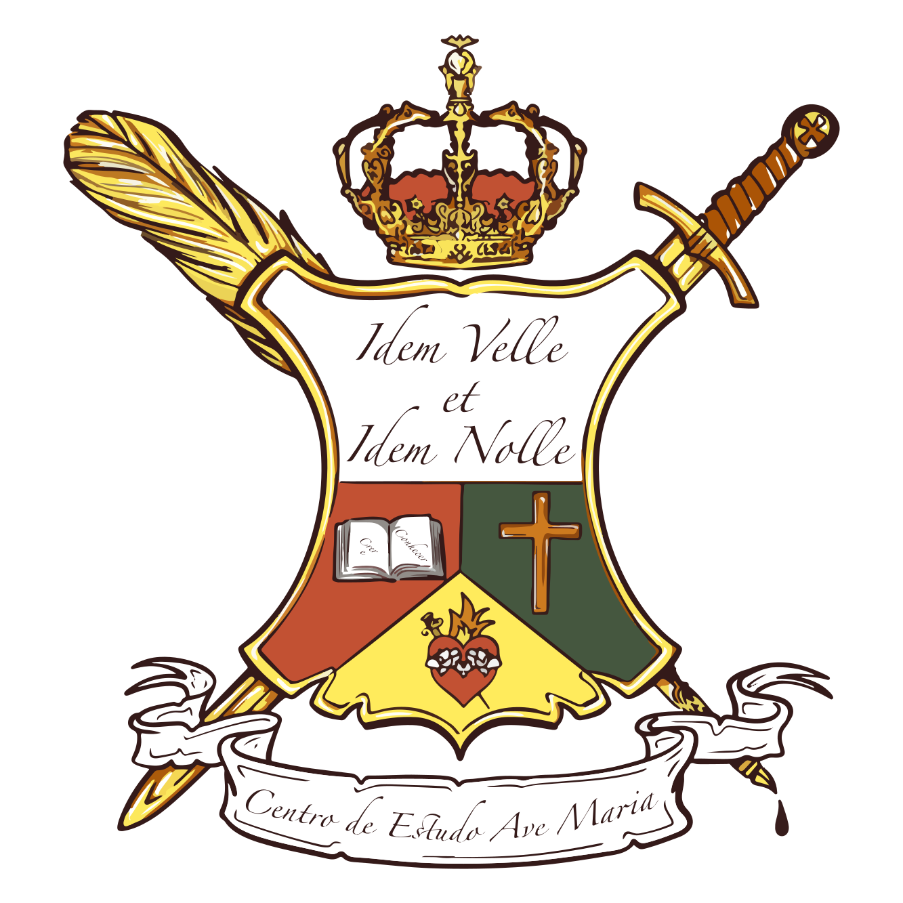

O homem interior, espiritual, é o homem novo: não depende do mundo nem do homem exterior.
O homem interior é autônomo, independente de todas as coisas externas à alma. Depende apenas do conhecimento de si e da graça, que é a ação de Deus.
O homem interior não depende do homem exterior, mas o ordena.
Quase ninguém mais tem um homem interior, porque não o cultiva. Aquilo que as pessoas percebem em si mesmas é o homem exterior, que age quase exclusivamente por meio dos sentidos e da imaginação.
O homem interior, que permanece quando excluímos tudo o que é exterior e resta apenas a alma (conforme Santo Agostinho) (ou apenas a percepção do ato da inteligência, conforme Santo Tomás), deve ser cultivado em nós. Ele está perdido e precisa ser reencontrado.
Encontramo-lo pelo autoconhecimento, quando percebemos nossa alma, conforme Santa Catarina de Sena e Santo Antão.
Pela filosofia, alcançamos o homem interior de forma rudimentar. É pela oração e pelos sacramentos que podemos chegar à sua perfeição: o homem interior restaurado por Cristo.
Quanto mais treinamos nossa abstração por meio das MEDITAÇÕES e menos importância damos às coisas do mundo, mais nos aproximamos do nosso homem interior.
O homem interior, espiritual, é o homem novo: não depende do mundo nem do homem exterior.
Rezem!
Pare um pouco, sente-se na cadeira, erga a cabeça e olhe para a frente, para algo real: pode ser um gramado, uma flor, um gato ou qualquer pessoa...
Agora, incline a cabeça, apoie os cotovelos nos joelhos e pense nas coisas virtuais que o cercam: vídeos curtos no celular, fotografias digitais, teorias políticas, escândalos de corrupção, ideologias, propagandas e especulações...
Esses dois parágrafos parecem abranger tudo: coisas reais e palpáveis e coisas virtuais e invisíveis. Tudo isso existe de alguma forma, mas não é tudo.
Há algo que não percebemos de imediato, porque não é tão evidente para nós. Há outra vida que muitos não percebem e que, entretanto, está muito próxima de nós. Há uma vida escondida em nós: temos uma vida interior.
Essa vida interior é o nosso bem maior. Na verdade, é tudo o que temos. É por meio dela que realmente podemos dizer: "isto é meu".
Se podemos comandar e ordenar alguma coisa, é esta vida escondida. Ela parece tão escondida que só a encontramos no silêncio, afastados do mundo. Entre no seu quarto, feche a porta e, no silêncio, encontrará algo que, na verdade, não está tão escondido assim: está ali, querendo mostrar-se, como que em dores de parto, querendo vir à luz. É a vida interior que se revela.
Ao encontrá-la, contemple-a, concentre-se em suas entranhas e mergulhe nas profundezas da sua alma.
Pergunte quem você é e quão malicioso é. Peça que sua vida interior lhe mostre todos os seus erros. Seja sincero e não tenha medo, pois, aparentemente, é uma conversa entre você e você mesmo.
Mas e o bem que fiz? Não há bem humano sem mácula, malícia ou segundas intenções. Então, esqueça-o e não caia no erro da vanglória, achando-se um herói no teatro da vida humana.
Nossa vida interior é um diamante. É a única coisa que pode nos revelar quem somos e nos colocar no lugar que realmente nos cabe e merecemos. É essa vida escondida que nos lembra de algo que muitas vezes esquecemos: "Tudo o que fiz fui eu mesmo que fiz".
Essa vida escondida, essa vida interior, é o nosso bem maior. É tão valiosa que constitui o único meio que temos de falar com Deus. Na verdade, quando, no silêncio, aparentemente falamos conosco, estamos falando com Deus. Estamos orando.
Encontre a vida escondida, e você se conhecerá.
A vida espiritual tem três idades, que correspondem, mais ou menos, às idades biológicas.
A primeira vai até a adolescência ou o início da vida adulta. É a via purgativa, que se estende até a conversão. Em geral, leva vinte ou trinta anos para se completar.
A segunda corresponde à vida adulta plena, entre os 40 e os 60 anos. É a via iluminativa: vai do primeiro grau de oração (oração vocal) ao quarto (oração de simplicidade). Se mantivermos a constância e a hypomonè, essa fase leva, em média, vinte ou trinta anos.
A terceira é a idade unitiva, própria do homem maduro, que atravessou a porta estreita, fixa o olhar no Nome de Cristo, recebe os rios de água viva e entra na contemplação.
Assim, não se aflijam com a demora dos resultados, pois Deus não está de costas. Ele age por meio da graça. De graça em graça, crescemos, amadurecemos e formamos Cristo em nós.
Esperem um pouquinho, mais um pouquinho, só mais um pouquinho: tenham esperança.
Esse é o caminho ordinário da salvação. Começa com a graça santificante recebida no Batismo e se destina a todos os que creem no Verbo Encarnado.
Começa pela fé e pela caridade da Trindade e se mantém ao longo do tempo pela esperança, que aperfeiçoa a fé quando fixamos os olhos da alma em Cristo.
Rezem! Essa é a única maneira de fazer nosso homem interior crescer, com a ajuda dos sacramentos.
Sempre o belo é melhor e mais oportuno!
Por isso, o Halloween, que, antes de qualquer coisa, prioriza o feio, o horrendo e o animalesco, concorre para o mal.
Além disso, a divulgação da magia, do oculto, do esotérico, da bruxaria, do animismo e, por fim, do satanismo, propositalmente embutida nessa festa, também concorre para o mal.
Essa tradição não tem nada de inocente, exceto pelas suas vítimas, que são principalmente as crianças.
Pais, professores e escolas inteiras contribuem para alastrar esse mal entre filhos e alunos: muitas vezes por ignorarem aquilo que deveriam saber; outras, na maioria dos casos, por negligenciarem o perigo, o que torna a culpa ainda maior.
Quando se pinta uma criança e se veste nela uma fantasia de diabinho, zumbi, lobisomem ou bruxinha, dizendo "tão bonitinhos...", está-se fazendo uma oferenda a Satanás. É preciso ser muito inteligente para perceber isso? Não. Qualquer um consegue perceber esse mal.
Assim, sem dúvida, essa festa funciona como uma porta de entrada para a ação do maligno na vida das nossas crianças e na nossa. E o futuro pode ser sombrio e perturbador...
Pela intercessão de Nossa Senhora, Cristo, protegei nossas crianças!
O imaginário infantil é o conjunto de memórias e símbolos que as crianças criam a partir do mundo e que acabam moldando sua forma de pensar e compreender a realidade.
Esse imaginário precisa ser povoado por símbolos, narrativas e modelos de santidade, mesmo que a razão das crianças ainda não esteja plenamente madura para compreendê-los, sobretudo no que diz respeito às realidades divinas.
Ao ouvirem histórias dos santos, dos anjos e do próprio Jesus Cristo, as crianças, a partir do imaginário que construíram, concebem o invisível e podem vislumbrar, desde já, o Céu.
É necessário dar atenção e importância àquilo que está sendo guardado no imaginário de nossas crianças.
É fundamental perceber que é nossa responsabilidade, enquanto pais, mestres e catequistas, ajudar nossas crianças a discernir o certo do errado e a cultivar, de maneira natural e profunda, a virtude da fé em cada um dos pequeninos.
